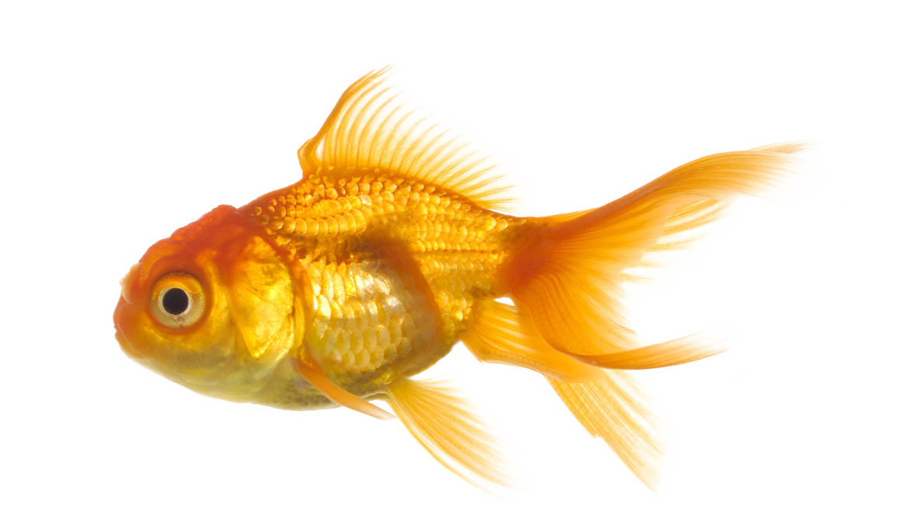

Conhecimentos Básicos - Javascript
Escolha um programa:
Dividir conta entre amigos
Simulação de cofrinho
Tempo para aposentar
Rodar programa
No mês de março tivemos a introdução ao Javascript e aprendemos um pouco mais sobre atributos CSS.

Esvaziar aquário
Ver Desenvolvedores
Voltar para index
Ir para abril
90
10